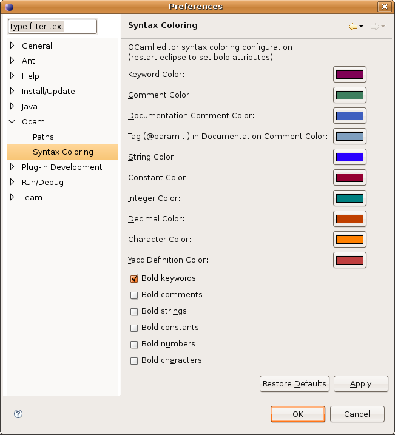

The O'Caml plug-in provides syntax coloring for ml, mli, mll and mly files.
You can configure the colors by clicking on Window > Preferences (or Eclipse > Preferences on Mac), and then choosing the Ocaml subsection in the tree and selecting Syntax Coloring.

To change a color, click on it and you will get a color selection dialog. You can also choose if you want some elements to appear in bold.
Once you have chosen your preferred colors and bold attributes, close and re-open the opened editors for your changes to take effect.